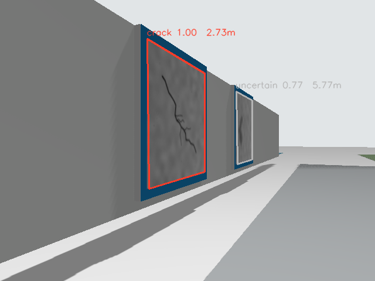
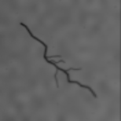
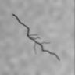

ひび割れ候補 1
停止位置: x=3.017 m / CNN出力: 0.999
推定異常位置 x: 6.872 m

CNNへ入力した領域（グレースケール）

実際のCNN入力（96×96、明るさ補正後）

終了状態: DONE / 点検回数: 1
合成画像を使ったシミュレーション実証。位置はオドメトリと画像からの推定値。
停止位置: x=3.017 m / CNN出力: 0.999
推定異常位置 x: 6.872 m

CNNへ入力した領域（グレースケール）

実際のCNN入力（96×96、明るさ補正後）
